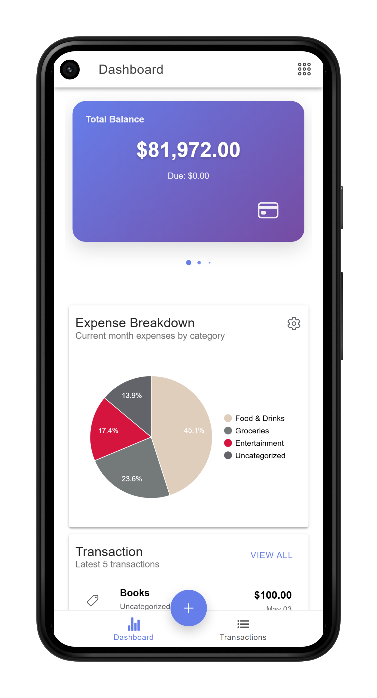
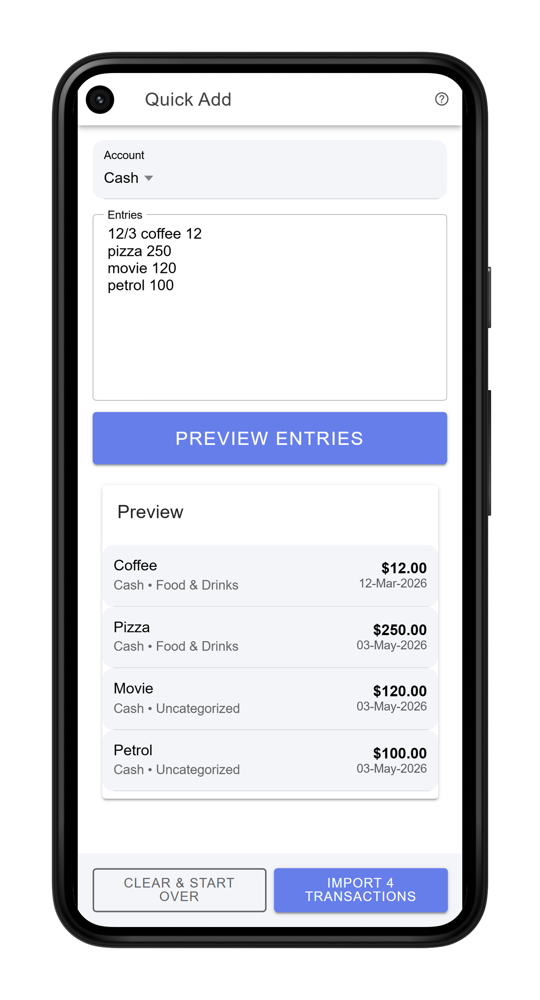
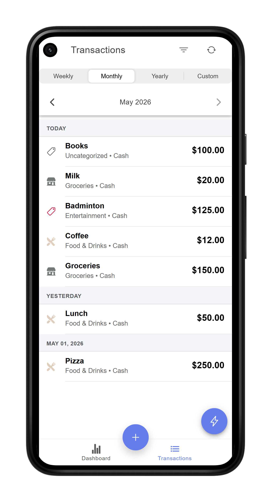
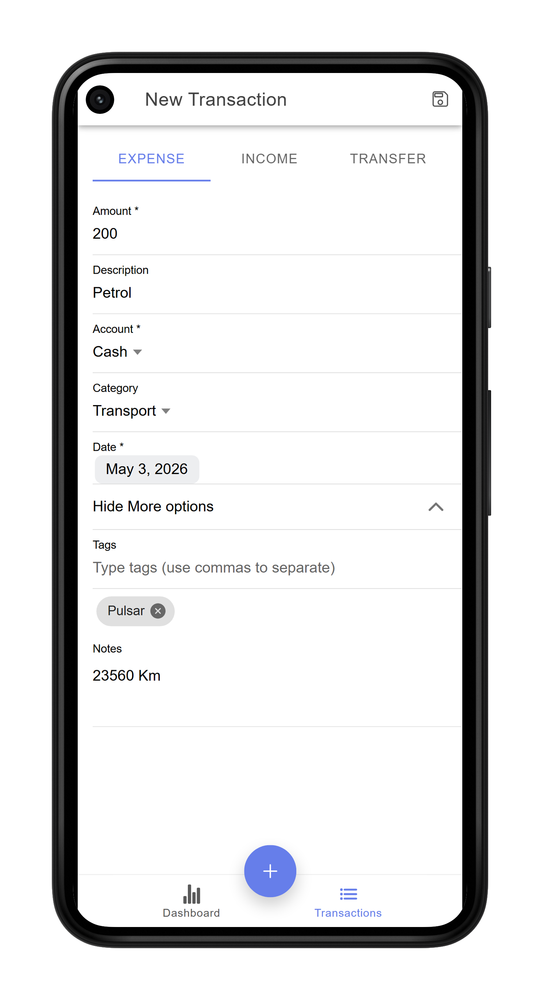
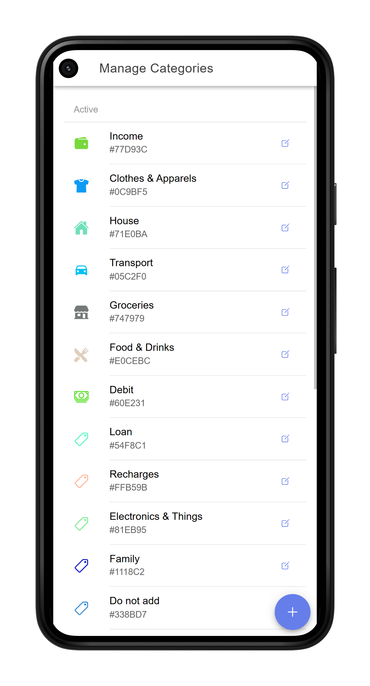
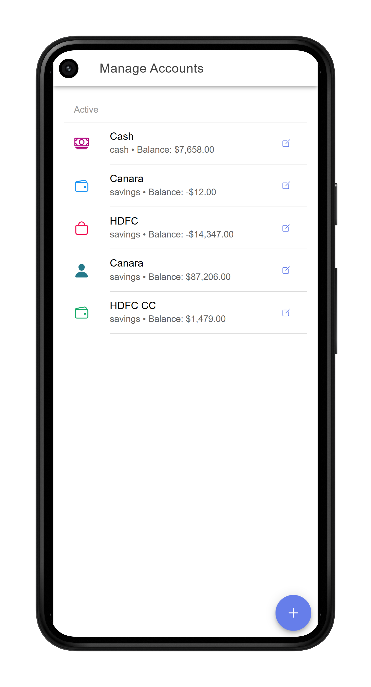
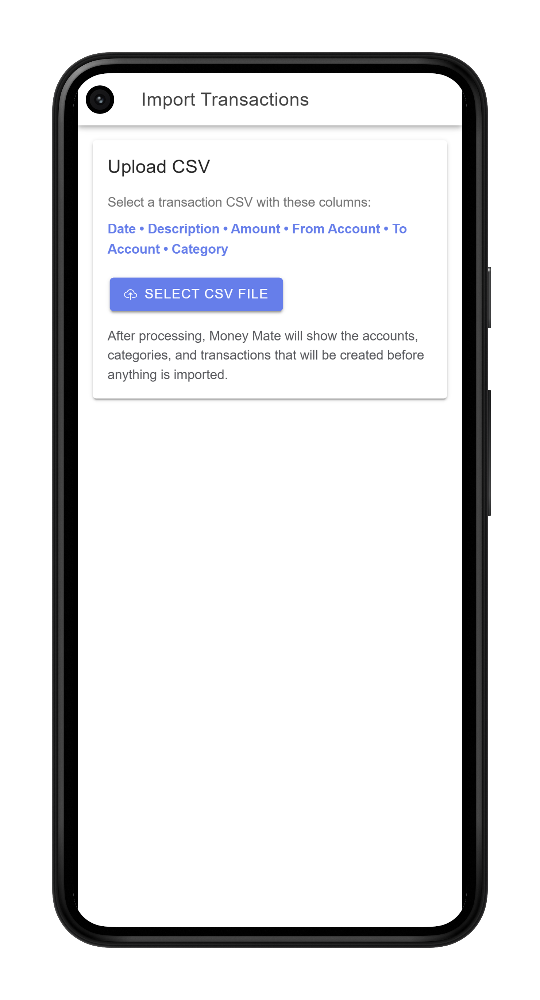
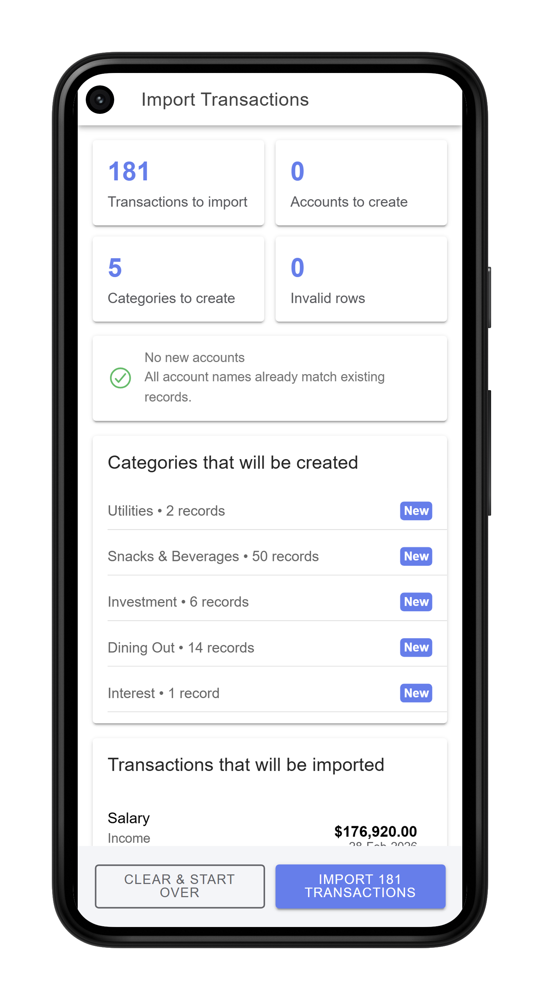

Fully Customizable Dashboard
Your home screen, your choice. Pick and arrange widgets — top expenses, account balances, expense breakdown, month-over-month comparison — to build a dashboard that works for you.
Hobby Project
A smart expense tracker built for real life — not too simple, not too complicated. Your data lives in your own Google account.
MoneyMate was born from 10+ years of personal expense tracking experience. Most apps are either too simple to be useful or too complex to use consistently. MoneyMate fills that gap — powerful enough for serious trackers, approachable enough for everyday use.
Data is stored in your own Google account via Google Sheets, meaning no private servers hold your financial data. Not even the developer can access it.
Ionic · Angular · Capacitor · Android · Web App · Google Sheets · Open Source

Your home screen, your choice. Pick and arrange widgets — top expenses, account balances, expense breakdown, month-over-month comparison — to build a dashboard that works for you.

Just type "Tea 12" and MoneyMate automatically detects the amount and fills in the relevant details. Add multiple entries in one go — no tapping through forms every time.

All your transactions in one place, organised by day — each group shows the day's total and entry count at a glance. Navigate across months with a single tap, and narrow down exactly what you need using filters for account, category, tags, and transaction type (expense, income, or transfer).

When quick entry isn't enough, record a transaction manually with full detail. Typing the description auto-fills the category — most of the time you only need to enter the amount and description. Need more? Add custom tags (e.g. Ducati, Alex, Swiss Tour) for easy filtering later, attach notes (e.g. kilometre reading on a petrol entry), and log income or transfers between accounts — all from the same screen.


Create your own categories and accounts, each with a unique colour and an icon chosen from a large library. These colours and icons are used consistently throughout the app, making it easy to spot patterns at a glance.


Moving from another app? Import your existing transactions from a CSV file. Categories and accounts are created automatically during the import, so switching to MoneyMate takes minutes, not hours.